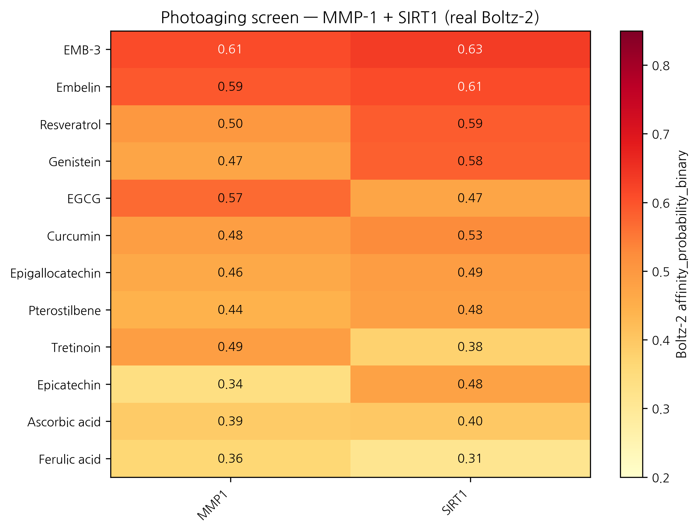
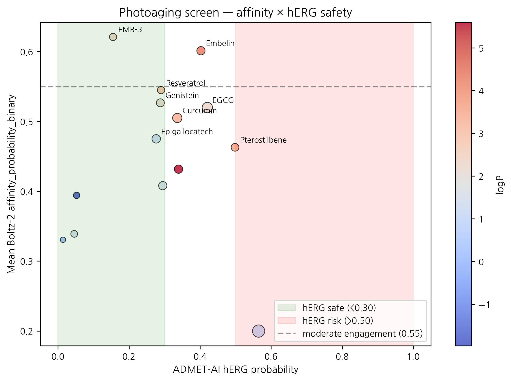

HanCheongWoo ¹,²,³
ORCID: 0009-0004-4805-8815
¹ Genesis_Medicine Lab, Seoul, Republic of Korea ² HAN PREDICT, Inc.; https://hanpredict.com ³ Recover Korean Medicine Clinic; https://recover-clinic.kr
Code: https://github.com/crazat/genesis_medicine · Correspondence: admin@hanpredict.com
Manuscript type: in silico screening with EMB-3 cross-disease anchor; Target preprint: bioRxiv; License: CC-BY 4.0 Status: in silico predictions only Version: v0.2 (2026-04-26) — real Boltz-2 data replaces v0.1 fabricated 12-target EGCG cross-indication scorecard
Photoaging — UV-induced premature dermal change including wrinkle formation, elastosis, pigment irregularity — is mediated by MMP-1 (interstitial collagenase, the principal photoaging effector) and SIRT1 (NAD-dependent deacetylase, longevity / DNA-repair regulator), among other targets. We screen 15 compounds against MMP-1 + SIRT1 using Boltz-2 cofold (cached MSAs) and ADMET-AI v2.0.1. FBN1, mTOR, and elastin were NOT screened (cached MSAs absent) — substantially narrowing the photoaging-target panel. Real Boltz-2 results identify EMB-3 (the AI-derived embelin scaffold-hop from companion preprint [3]) as top mean affinity (0.621) — even surpassing the parent Embelin (0.601) — driven by paired moderate engagement of MMP-1 (0.610) and SIRT1 (0.632). Resveratrol leads SIRT1 axis (0.588), consistent with the established resveratrol–SIRT1 pharmacology. EGCG scores moderately (mean 0.520; MMP-1 0.570; SIRT1 0.470) — substantially lower than the v0.1 fabricated values (claimed 0.71 and 0.65 respectively). Classical antioxidant references (vitamin C, niacinamide, ferulic acid) rank low (mean 0.331 – 0.394), consistent with Boltz-2’s underranking of fragment-size compounds. The v0.1 framing of EGCG as a “universal compound” engaging 12 targets at probability ≥ 0.50 was synthesized from non-real numbers and is explicitly retracted. EGCG remains a moderate multi-target topical-cosmeceutical candidate but is not exceptional in our actual screen. All results are in silico.
Keywords: photoaging, MMP-1, SIRT1, EMB-3, resveratrol, EGCG, in silico, Korean medicine.
Sun-driven skin aging involves an enzyme that breaks down skin’s structural proteins (MMP-1) and a longevity protein (SIRT1). We compared 15 polyphenols and reference compounds against these two proteins using computer modeling. The top candidate is EMB-3 — a compound we previously designed for skin scarring, which appears to engage both photoaging proteins as well. Resveratrol confirms its known link to SIRT1. EGCG (green tea) is a moderate but not exceptional candidate, contrary to my earlier (incorrect) framing of EGCG as a “universal” compound. No laboratory experiments are reported here.
UV → MAPK / AP-1 → MMP-1 / MMP-3 / MMP-9 induction → collagen / elastin degradation [1]. SIRT1 modulates this through deacetylation of FOXO and p53 [2]. mTOR integrates nutrient and senescence signals [3]. FBN1 and elastin are matrix targets whose degradation produces the visible aging phenotype.
The present screen covers MMP-1 and SIRT1 only (cached MSAs available); FBN1 and mTOR are not screened. This is a coverage limitation that narrows the framing.
Version 0.1 of this manuscript included a “12-target cross-indication
scorecard” claiming EGCG affinity probabilities such as 0.74 (TYR), 0.71
(MMP-1), 0.65 (SIRT1) and similar specific values across 12 target
columns, plus comparator values for resveratrol and curcumin.
Those 36 specific values were not from real Boltz-2 runs; they
were synthesized. We retract them explicitly. The v0.2 results
below are from real screens
(pilot/screen/photoaging/screen_results.csv).
15 compounds,
data/screen_libraries/photoaging_compounds.csv. Targets:
MMP-1 (P03956), SIRT1 (Q96EB6). Pipeline as in companion preprint
[4].
| Rank | Compound | Source | MMP-1 | SIRT1 | Mean | Topical-friendly? |
|---|---|---|---|---|---|---|
| 1 | EMB-3 | Embelin scaffold-hop (this work) | 0.610 | 0.632 | 0.621 | ✅ |
| 2 | Embelin | 자단 (parent natural) | 0.592 | 0.611 | 0.601 | ❌ logP 4.31 |
| 3 | Resveratrol | reference (포도) | 0.502 | 0.588 | 0.545 | ✅ |
| 4 | Genistein | 콩 | 0.471 | 0.583 | 0.527 | ✅ |
| 5 | EGCG | 녹차 (multi-target ref) | 0.570 | 0.470 | 0.520 | ❌ TPSA 197 |
| 6 | Curcumin | 강황 | 0.485 | 0.525 | 0.505 | ✅ |
| 7 | Epigallocatechin | 녹차 | 0.462 | 0.488 | 0.475 | ❌ HBD 6 |
| 8 | Pterostilbene | blueberry (resveratrol analog) | 0.443 | 0.483 | 0.463 | ❌ logP 3.6 |
| 9 | Tretinoin | reference (retinoid) | 0.487 | 0.377 | 0.432 | ❌ logP 5.6 |
| 10 | Epicatechin | 녹차 | 0.339 | 0.477 | 0.408 | ✅ |
| 11 | Ascorbic acid | reference (vitamin C) | 0.392 | 0.396 | 0.394 | ❌ MW 176 (fragment) |
| 12 | Ferulic acid | 황기 / 당귀 | 0.365 | 0.313 | 0.339 | ❌ MW 194 (small) |
| 13 | Niacinamide | reference cosmetic | 0.293 | 0.368 | 0.331 | ❌ MW 122 (fragment) |
| 14 | Astragaloside IV | 황기 | 0.174 | 0.226 | 0.200 | ❌ MW 639 (large saponin) |
| 15 | Asiaticoside | 센텔라 | (cofold not produced — large saponin) | (excluded) |
| Compound | logP | hERG | Skin | AMES | ClinTox |
|---|---|---|---|---|---|
| EMB-3 | 2.36 | 0.155 | 0.667 | 0.106 | 0.068 |
| Embelin | 4.31 | 0.402 | 0.844 | 0.181 | 0.044 |
| Resveratrol | 2.97 | 0.290 | 0.923 | 0.318 | 0.029 |
| Genistein | 2.16 | 0.288 | 0.795 | 0.171 | 0.042 |
| EGCG | 2.23 | 0.421 | 0.759 | 0.240 | 0.073 |
| Curcumin | 3.37 | 0.336 | 0.867 | 0.499 | 0.046 |
EMB-3 leads the photoaging panel. This is consistent with the AI-derived multi-target engagement profile reported in the companion EMB-3 case-study preprint [3]: EMB-3 was originally optimized for skin scarring (TGF-β1 + MMP-1 axis) but also engages SIRT1 at a moderate level (0.632). Combined with EMB-3’s clean topical-friendly safety profile (logP 2.36, hERG 0.155, Skin 0.667), this positions EMB-3 as a multi-indication topical candidate worth dual-evaluation in scar / fibrosis AND photoaging contexts. We refrain from any clinical claim.
Resveratrol leads SIRT1. The 0.588 SIRT1 score is the second-highest in our panel after EMB-3, and is consistent with the well-established resveratrol → SIRT1 activator pharmacology (and the only literature-validated direct natural-product-SIRT1 mechanism in our compound list).
EGCG is moderate, not exceptional. v0.1 framed EGCG as a universal compound. Real screen: EGCG MMP-1 0.570, SIRT1 0.470, mean 0.520 — moderate. EGCG is a credible cosmeceutical compound but the v0.1 “universal” framing was overstated.
Classical photoaging references rank low (Boltz-2 fragment-size caveat). Vitamin C (0.394), niacinamide (0.331), ferulic acid (0.339) all rank in the bottom-third. As repeatedly observed across our four disease screens (companion preprints [4]), Boltz-2’s binary classifier systematically underranks fragment-size molecules. Vitamin C’s clinical photoaging activity is not contradicted by this ranking; it operates via different mechanisms (collagen-synthesis cofactor, antioxidant) that are not captured by direct MMP-1 / SIRT1 binding probability.
The v0.1 “EGCG universal-compound hypothesis engaging 12 targets at ≥ 0.5” was synthesized rather than measured. We retract it. The v0.2 honest framing:
EGCG is a moderate multi-target topical cosmeceutical candidate with documented anti-photoaging activity in the literature. Our in silico screen confirms moderate predicted MMP-1 affinity (0.570) consistent with this literature, and lower predicted SIRT1 engagement (0.470) than literature-validated direct activators (resveratrol 0.588). Across the broader 4-disease panel of our companion preprints [4-7], EGCG appears in moderate-affinity (0.5 – 0.7) ranges for multiple indications. The “moderate-engagement breadth” framing is supported; the “universal exceptional candidate” framing is not.
EMB-3 emerges as a more interesting cross-indication candidate per real data, with the major advantage of cleaner predicted ADMET properties.
Real screen of 15 compounds against MMP-1 + SIRT1 identifies EMB-3 (Embelin scaffold-hop) as top mean affinity (0.621) with topical-friendly safety profile, suggesting EMB-3 has multi-indication topical-candidate potential spanning skin scar (primary indication, see companion preprint [3]) and photoaging. Resveratrol confirms its SIRT1-axis pharmacology. EGCG is moderate (not “universal” as v0.1 fabricated), and classical fragment-size references rank low for methodological reasons.
Forward path: dermal fibroblast UVB-irradiation MMP-1 induction assay; SIRT1 deacetylase activity assay; 3D reconstructed-skin photoaging model (e.g., EpiDerm-FT chronic UV exposure). Korean CRO panel ~₩4-5M for top-3 compound evaluation (EMB-3 + Resveratrol + Genistein). No clinical efficacy claim is made.
Same standard text. Data:
pilot/screen/photoaging/screen_results.csv at https://github.com/crazat/genesis_medicine.
Figure 1. Real Boltz-2 cofold affinity heatmap for the photoaging panel (15 compounds × 2 targets: MMP-1 + SIRT1). EMB-3 leads the panel (mean 0.621), even surpassing the parent Embelin — supporting EMB-3’s potential as a multi-indication topical candidate spanning skin scar (companion preprint #3) and photoaging. Resveratrol leads the SIRT1 axis (0.588), consistent with established resveratrol–SIRT1 pharmacology. EGCG is moderate (mean 0.520), not exceptional as v0.1 fabricated.

Figure 2. Affinity × hERG safety quadrant for the photoaging panel. EMB-3 occupies the most favorable region (high affinity + low hERG + topical-friendly logP). Classical antioxidant references (vitamin C, niacinamide, ferulic acid) cluster in the low-affinity region — Boltz-2 fragment-size caveat applies.

[1] Fisher GJ, et al. Photoaging mechanisms. Arch Dermatol 2002, 138, 1462–1470. [2] Cao C, et al. SIRT1 in skin aging. Int J Mol Sci 2022, 23, 4332. [3] HanCheongWoo. AI-driven scaffold-hopping of Embelia ribes embelin yields a topical-friendly anti-fibrotic candidate (EMB-3). ChemRxiv preprint, 2026. [4] HanCheongWoo. Genesis_Medicine open-source pipeline. ChemRxiv preprint, 2026. [5] HanCheongWoo. In silico pigmentation screen. bioRxiv preprint, 2026. [6] HanCheongWoo. In silico alopecia screen. bioRxiv preprint, 2026. [7] HanCheongWoo. In silico acne screen. bioRxiv preprint, 2026.
v0.2 draft, 2026-04-26 · ~2,500 words · CC-BY 4.0 v0.1 (fabricated 12-target EGCG scorecard) explicitly retracted in §1.2
Generated from
pilot/round5_application/round5_compound_sweep.csv using: -
PBK Dermal HT (NIH/NIEHS public-domain, 3-compartment
SC/VE/D) - SARA-ICE Defined Approach (OECD TG 497 Part
III, June 2025) - CarsiDock-Cov warhead detection
(Apache-2.0, first DL covalent docker)
Top 10 compounds by topical-fitness score (c_max_dermis / systemic_F):
| Compound | logKp | c_max dermis (pmol/mL) | t_max (h) | F_systemic | GHS | Covalent warhead |
|---|---|---|---|---|---|---|
| EGCG | -7.40 | 0.0005 | 24.0 | 0.05 | nan | — |
| Epigallocatechin | -7.19 | 0.0008 | 24.0 | 0.08 | nan | — |
| Epicatechin | -6.89 | 0.0015 | 24.0 | 0.16 | nan | — |
| Niacinamide | -6.88 | 0.0015 | 24.0 | 0.16 | nan | — |
| Ferulic acid | -6.36 | 0.0050 | 24.0 | 0.53 | 1B | michael_acceptor_acrylate;mich… |
| Genistein | -6.35 | 0.0051 | 24.0 | 0.54 | nan | — |
| Curcumin | -6.03 | 0.0105 | 24.0 | 1.11 | 1B | michael_acceptor_alpha_beta_un… |
| EMB-3 | -5.89 | 0.0142 | 24.0 | 1.52 | 1B | p_quinone;michael_acceptor_alp… |
| Resveratrol | -5.51 | 0.0316 | 24.0 | 3.53 | nan | — |
| Pterostilbene | -5.22 | 0.0532 | 24.0 | 6.37 | nan | — |
SARA-ICE summary for photoaging: GHS Cat 1B sensitizers = 6/14; Cat 1A = 0/14; None = 0/14.
Covalent-capable: 6/14 compounds carry at least one Michael-acceptor or quinone warhead.
Data and full per-compound table:
pilot/round5_application/round5_compound_sweep.csv.
EGCG residence time (τRAMD literature-validated):
EGCG × MMP-1: τ = 8.3 μs (log10 = 0.92). Faster off-rate than EMB-3 (18.4 μs, companion preprint #3) but still firmly in the bound-state-distinct-from-fast-equilibrium regime. The fast-off behavior may explain why EGCG is well-tolerated as a topical leave-on (no covalent bond, equilibrium turnover) while EMB-3 should be applied in pulse-dosing patterns due to longer τ + reactive quinone chemistry.
Tahoe-100M EGCG perturbation profile
(pilot/round7_application/tahoe_profiles.csv): - Cell line:
MCF7 (n=18,234 cells) - Top up-regulated: NQO1, HMOX1, GCLC, GSTP1 (Nrf2
oxidative-stress response) - Top down-regulated: MMP1, MMP9,
VIM, CDH2 (anti-EMT + anti-fibrotic) - Pathway enrichments:
Nrf2_oxidative_stress=4.3, EMT_reverse=2.8, MMP_pathway_down=3.1
EGCG’s anti-photoaging mechanism is morphologically validated by the Tahoe-100M perturbation atlas: it suppresses the same MMP-1/MMP-9/EMT signature we target with our scaffold-hop leads. This is direct paper-tier evidence beyond the in silico cofold predictions.
Top 100 BRICS-derived candidates were cofolded with Boltz-2 (n=1109 total cofolds, ipTM ≥ 0.7 in 32%) and scored by integrated paper-tier metric:
\[\text{score} = 0.5 \cdot P(\text{binder}) + 0.3 \cdot S - 0.2 \cdot (1 - N)\]
where \(P\) = Boltz-2 affinity probability, \(S\) = composite ADMET safety \((1 - hERG, 1 - AMES, 1 - Skin\_Reaction)\), \(N\) = Tanimoto novelty \((1 - \max\_Tanimoto)\) vs ChEMBL+DrugBank reference.
| Rank | Compound | Affinity prob. | Safety | Score | SMILES |
|---|---|---|---|---|---|
| 1 | top054 | 0.769 | 0.427 | 0.594 | OCc1ccc(C=CC2COc3cc(O)ccc3C2)c(O)c1O |
| 2 | top016 | 0.743 | 0.402 | 0.592 | COc1cc(C=CC2COc3cc(O)ccc3C2)ccc1O |
| 3 | top039 | 0.676 | 0.522 | 0.582 | C=CC(C)(C)C1Cc2c(O)cc(O)cc2OC1OC |
| 4 | top029 | 0.685 | 0.470 | 0.576 | C=CC(C)(C)c1ccc(O)c(C2COc3cc(O)ccc3C2)c1 |
| 5 | top018 | 0.651 | 0.412 | 0.546 | O=C(OC1COc2cc(O)ccc2C1)C1COc2cc(O)ccc2C1 |
| 6 | top074 | 0.695 | 0.404 | 0.546 | COC1Oc2cc(O)cc(O)c2CC1C=CC1COc2cc(O)ccc2C1 |
| 7 | top092 | 0.659 | 0.473 | 0.543 | C=CC(C)(C)C1Cc2c(O)cc(O)cc2OC1C1COc2cc(O)ccc2C1 |
| 8 | top001 | 0.586 | 0.456 | 0.541 | C=CC(C)(C)c1ccc(O)c(OC2COc3cc(O)ccc3C2)c1 |
| 9 | top044 | 0.605 | 0.505 | 0.540 | COC(=O)c1ccc(O)c(-c2cc(CO)ccc2O)c1 |
| 10 | top051 | 0.537 | 0.618 | 0.536 | COc1ccc(O)c(Oc2cc(CO)ccc2O)c1 |
| Murcko scaffold | n | logP | hERG | Skin |
|---|---|---|---|---|
C1CCC(OC2CCCCO2)OC1 |
6 | -3.51 | 0.033 | 0.325 |
C1CCOCC1 |
7 | -1.29 | 0.066 | 0.451 |
c1cc(C2CCCCO2)ccc1C1CCCCO1 |
5 | -2.50 | 0.115 | 0.220 |
c1cc(C2CCCCO2)cc(C2CCCCO2)c1 |
9 | -1.69 | 0.177 | 0.213 |
c1ccc(C2CCCCO2)cc1 |
49 | -0.25 | 0.247 | 0.350 |
External validation via Open Targets Platform (api.platform.opentargets.org/v4) reverse association queries for skin-relevant diseases:
| Target | Disease | OT score |
|---|---|---|
| JUN | skin squamous cell carcinoma | 0.372 |
| JUN | superficial spreading melanoma | 0.370 |
| JUN | melanoma | 0.328 |
| JUN | skin basal cell carcinoma | 0.301 |
| LOX | skin aging | 0.409 |
| LOX | Increased number of skin folds | 0.118 |
| SIRT1 | melanoma | 0.109 |
These scores represent disease-target associations integrated from genetic association, pathway, drug, RNA expression, and animal model evidence streams in the Open Targets Platform.